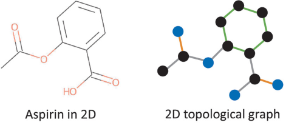
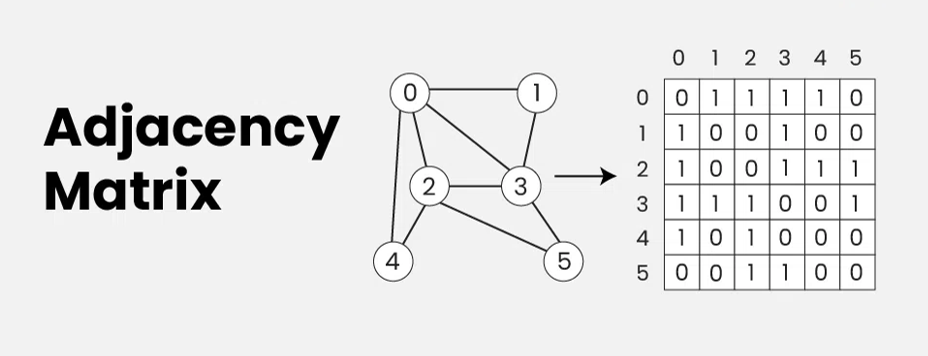
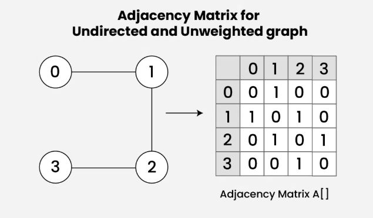
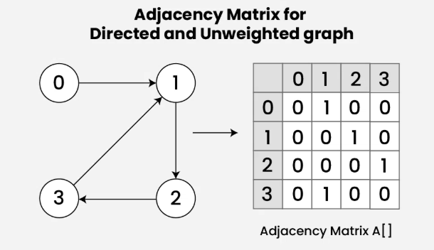

Graph-Neural-Networks#
Introduction#
Graph is an expressive and powerful data structure that is widely applicable, due to its fexibility and effectiveness in modeling and representing graph structure data. It has been more and more popular in various felds, including biology, fnance, transportation, social network, among many others. Graph Neural Networks are neural architectures specifcally designed for graph-structured data.
Basics of graph#
Graph: A graph is composed of a node set and an edge set, where nodes represent entities and edges represent the relationship between entities. The nodes and edges form the topology structure of the graph. Besides the graph structure,nodes, edges, and/or the whole graph can be associated with rich information represented as node/edge/graph features (also known as attributes or contents). for a molcule feature vector would contain information about atoms , for a social network attributes about a person for instans .

Adjancy Mtaric: it tells us nodes are connected

Subgraph: A subgraph is a graph whose set of nodes and set of edges are all subsets of the original graph
Heterogeneous Graphs: Graphs are called heterogeneous if the nodes and/or edges of the graph are from different types. A typical example of heteronomous graphs is knowledge graphs where the edges are composed of different types
Dynamic Graph: refers to when at least one component of the graph data changes over time, e.g., adding or deleting nodes, adding or deleting edges, changing edges weights or changing node attributes, etc. If graphs are not dynamic, we refer to them as static graphs.
Undirected Graphs: In these graphs, edges are bidirectional, representing two-way relationships without any direction.

Directed Graphs: In these graphs, edges have a direction, indicated by an arrow, showing a one-way relationship from one node to another.

Graph Representation Learning#
graph representation learning aims at assigning nodes in a graph to low-dimensional representations and effectively preserving the graph structures. To process graph data effectively, the frst critical challenge is to fnd effective graph data representation, that is, how to represent graphs concisely so that advanced analytic tasks, such as pattern discovery, analysis, and prediction, can be conducted effciently in both time and space.
Challenges of Traditional Graph Representation#
The traditional graph representation is defined as:
where:
\(V\) represents the set of nodes (vertices)
\(E\) represents the set of edges
This representation faces several challenges when dealing with large-scale graphs (billions of nodes), including:
High Computational Complexity:
Operations like traversals scale as \(O(|V| + |E|)\)
Storage requirements grow as \(O(|V|^2)\) for dense graphs
Low Parallelizability:
Many graph algorithms (e.g., DFS) have inherent sequential dependencies
Poor cache locality for irregular graph structures
Incompatibility with Machine Learning:
Non-Euclidean structure requires special adaptation for DL
Traditional representations don’t naturally support gradient-based optimization
Difficulty in learning meaningful node/edge embeddings
To address these challenges, graph representation learning has emerged, which aims to encode nodes into dense, low-dimensional vectors that preserve structural information. The goals are to reconstruct the original graph from these embeddings and facilitate downstream inference tasks such as link prediction, node classification, and clustering.
Traditional Graph Embedding#
Modern Graph Embedding#
1. Structure-Property Preserving Graph Representation Learning#
''' Among all the information encoded in a graph, graph structures and properties are two crucial factors that largely affect graph inference.'''
1.1 Structure Preserving Graph Representation Learning
1.2 Property Preserving Graph Representation Learning
2. Graph Representation Learning with Side Information#
2.1 Advanced Information Preserving Graph Representation Learning
Graph Neural Networks#
Graph Neural Networks: An Introduction#
Deep learning has revolutionized AI, excelling in Euclidean data like images and sequences. However, many real-world problems involve complex structures like graphs and manifolds—seen in social networks, recommendation systems, and drug discovery—that traditional models struggle to capture. Recently, Graph Neural Networks (GNNs) have gained significant attention for effectively modeling such graph-structured data, achieving remarkable success across various fields including bioinformatics, NLP, computer vision, and urban analytics.
Core Idea#
Node Representation Update#
GNNs update node representations by aggregating features from neighbors:
\( \mathbf{h}_v^{(k)} = \text{UPDATE}^{(k)} \left( \mathbf{h}_v^{(k-1)}, \; \text{AGGREGATE}^{(k)} \left( \left\{ \mathbf{h}_u^{(k-1)} : u \in \mathcal{N}(v) \right\} \right) \right) \)
Where:
\(\mathbf{h}_v^{(k)}\): node embedding at layer \(k\)
\(\mathcal{N}(v)\): neighbors of node \(v\)
\(\text{AGGREGATE}\): aggregation function (mean, sum, max)
\(\text{UPDATE}\): typically a neural network
Graph Convolutional Network (GCN)#
The layer update rule:
\( \mathbf{H}^{(k)} = \sigma \left( \tilde{\mathbf{D}}^{-\frac{1}{2}} \tilde{\mathbf{A}} \tilde{\mathbf{D}}^{-\frac{1}{2}} \mathbf{H}^{(k-1)} \mathbf{W}^{(k)} \right) \)
Where:
\(\tilde{\mathbf{A}} = \mathbf{A} + \mathbf{I}\): adjacency matrix with added self-loops
\(\tilde{\mathbf{D}}\): degree matrix of \(\tilde{\mathbf{A}}\)
\(\mathbf{W}^{(k)}\): learnable weights
\(\sigma\): activation function (e.g., ReLU)
Graph Attention Network (GAT)#
Attention coefficients:
\( \alpha_{uv} = \frac{ \exp \left( \text{LeakyReLU} \left( \mathbf{a}^\top \left[ \mathbf{W} \mathbf{h}_u \; \| \; \mathbf{W} \mathbf{h}_v \right] \right) \right) }{ \sum_{k \in \mathcal{N}(v)} \exp \left( \text{LeakyReLU} \left( \mathbf{a}^\top \left[ \mathbf{W} \mathbf{h}_k \; \| \; \mathbf{W} \mathbf{h}_v \right] \right) \right) } \)
Key points:
\(\mathbf{h}_u, \mathbf{h}_v\): Original feature vectors of nodes \(u\) and \(v\).
\(\mathbf{W}\): Learnable weight matrix transforming features into a suitable space.
Concatenation \(\left[ \mathbf{W} \mathbf{h}_u \; \| \; \mathbf{W} \mathbf{h}_v \right]\): Combines features of nodes \(u\) and \(v\).
\(\mathbf{a}\): Attention vector, learned during training, projecting concatenated features into a scalar score.
LeakyReLU: Activation that introduces non-linearity.
Exponentiation \(\exp()\): Converts scores into positive values.
Normalization (denominator): Summing over all neighbors’ exponentiated scores ensures that weights sum to 1, like a probability distribution.
This process results in normalized attention weights ((\alpha_{uv})) that determine how much influence each neighboring node has during feature aggregation in GAT.
Node update:
\( \boxed{ \mathbf{h}_v' = \sigma \left( \sum_{u \in \mathcal{N}(v)} \alpha_{uv} \mathbf{W} \mathbf{h}_u \right) } \)